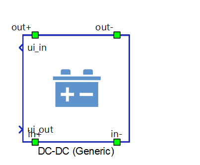
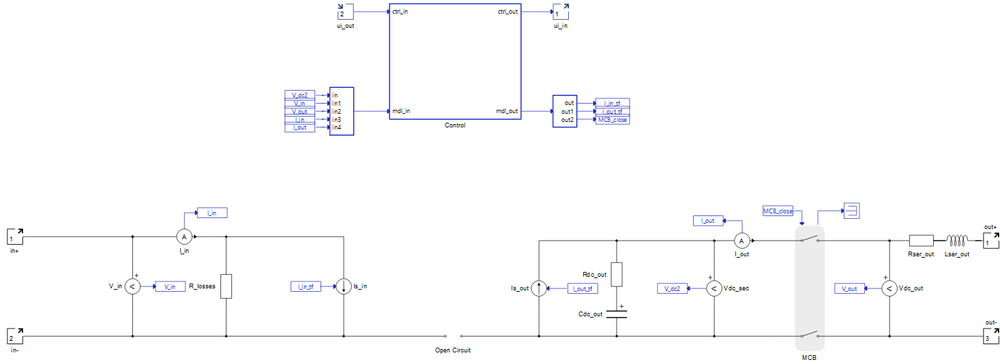
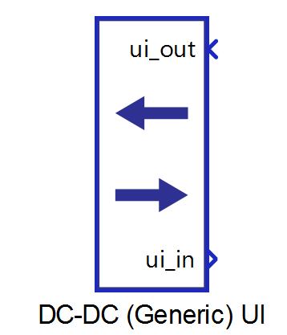
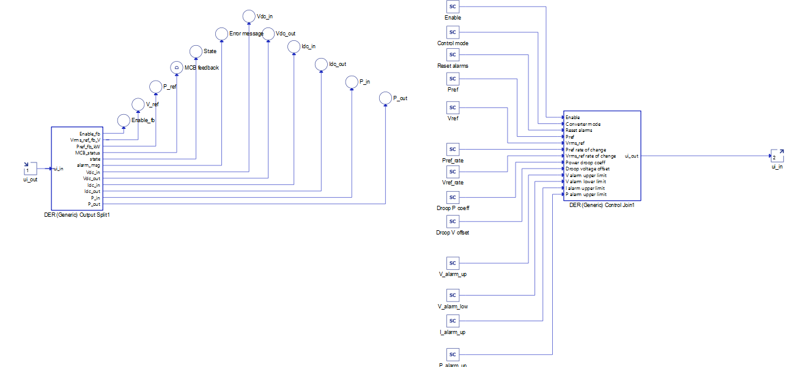
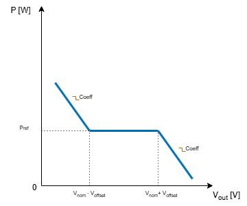

DC-DC Converter (Generic)
Description of the DC-DC Converter (Generic) component in Schematic Editor
The DC-DC Converter (Generic) component, shown in Figure 1, is a Schematic Editor library block from the Distributed Energy Resources section, of the Microgrid library. In Schematic Editor, it is presented as a DC-DC (Generic) component. It is capable of operating in isochronous, droop, and grid following mode.

DC-DC Converter (Generic) block diagram
The component consists of two main parts: a control subsystem which includes control and alarms logic, and a power stage with necessary measurements.

The Control subsystem contains:
- Main state machine - Checks enable, fault signals and boot up time, based on its values control state of MCB (main circuit breaker). It also sends information about current state.
- Fault state machine - Checks all measurements, signals the fault state, and sends an alarm message. A list of implemented faults is shown in Table 6.
- Transfer function block - It contains control logic which is common to all three control modes. It calculates values for signal controlled current sources based on power function of DAB (dual active bridge) converter for which the phase shift is calculated in one of three control mode function blocks. The product is fixed to a value 2.5 for which converter is able to operate in a wide range of input power. The frequency is set to 1000 Hz and leakage inductance of transformer is set to 0.125 mH.
- Isochronous function block - Calculates voltage reference signal and phase shift when isochronous control mode is activated. This control unit is described in Table 4
- Grid following / Droop mode function block - Calculates power reference signal and phase shift when grid following or droop control mode is activated. This control unit is described in Table 4
DC-DC Converter (Generic) power stage
The main elements of power stage include an average model of DAB (dual active bridge), an output filter and the MCB that connects the converter to the grid.
DC-DC Converter (Generic) can operate in a wide output power range. In an attempt to achieve that, the parameters of the DAB (dual active bridge) power transfer function are determined. Due to the physical limitations of the DAB topology, the rise time of the output power differs for different configurations of the DC-DC Converter (Generic) input parameters.
All power stage elements are parametrized from the component dialog box.
DC-DC Converter (Generic) inputs and outputs
This component has one user interface input, and one user interface output. The user interface input and user interface output are each arrays of 40 elements. Table 1 describes the input signals and their order, while Table 2 describes the output signals and their order.
All these signals are also defined in the corresponding DC-DC Converter (Generic) UI subsystem with built-in Probe components (for output signals) and SCADA Input components (for input signals), as shown in Table 3. These signals were split and joined by a properly configured DER (Generic) Output Split and DER (Generic) Control Join components. The DC-DC Converter (Generic) UI subsystem is located in the same place in the Schematic Editor library as the DC-DC Converter (Generic) component, and it can be unlinked from the library and adopted to the specific needs. Unit [pu] is associated to nominal values, or derived from them.
| Number | Input | Description | Signal range | Default value |
|---|---|---|---|---|
| 0 | Enable | A digital input that enables the converter. The converter is enabled when the input value is high. | 0 or 1 | 0 |
| 1 | Converter mode | An analog input that sets the converter
operation mode. Available modes and their respective codes are:
|
0 or 1 or 2 | 1 |
| 2 | Reset alarms | A digital input that resets alarms if the converter is in a fault state. | 0 or 1 | 0 |
| 3 | Pref | An analog input that is the active power reference. This reference is active in grid following and droop mode. In isochronous mode this reference is inactive. [pu] | 1 | |
| 4 | Vref | An analog input that sets the voltage reference. This reference is active in isochronous. In grid following and droop mode this reference is inactive. [pu] | 1 | |
| 5 | Pref_rate | An analog input that sets the rate of change of the active power reference ramping. [pu/s] | >= 0.001 | 1 |
| 6 | Vref_rate | An analog input that sets the rate of change of the voltage reference ramping. [pu/s] | >= 0.001 | 1 |
| 7 | Droop P coeff | An analog input that sets the coefficient for voltage droop curve. | [0, 1e3] | 20 |
| 8 | Droop V offset | An analog input that sets the offset for voltage droop curve. [%] | [0, 100] | 10 |
| 9 | V_alarm_up | Upper limit for the Grid voltage out of range error. [pu] | > 1 | 2 |
| 10 | V_alarm_low | Lower limit for the Grid voltage out of range error. [pu] | [0, 1) | 0.2 |
| 11 | I_alarm_up | Upper limit for the Over current protection. [pu] | > 1 | 1.5 |
| 12 | P_alarm_up | Upper limit for the Over power protection.[pu] | >=1 | 1.5 |
| 13-39 | reserved_ins | Inputs that are not used. | 0 |
| Number | Output | Description |
|---|---|---|
| 0 | Enable_fb | A digital output describing the converter enable/disable state. The converter is enabled if the output is high. |
| 2 | V_ref | An analog output with the instantaneous value of the applied voltage reference in the converter. [V] |
| 3 | P_ref | An analog output with the instantaneous value of the applied power reference in the converter. [W] |
| 4 | MCB feedback | An analog output with the value of main circuit breaker feedback signal. |
| 5 | State | An analog output with the value of converter state. |
| 6 | Error message | An analog output reporting the value of the alarm message. In order for the converter to return to normal operation after the alarm has been triggered, all alarms must be reset. |
| 7 | Vdc_in | An analog output with the value of converter's input voltage. [V] |
| 8 | Vdc_out | An analog output with the value of converter's output voltage.[V] |
| 9 | Idc_in | An analog output with the value of converter's input current. [A] |
| 10 | Idc_out | An analog output with the value of converter's output current. [A] |
| 11 | P_in | An analog output with the value of converter's input power. [W] |
| 12 | P_out | An analog output with the value of converter's output power. [W] |
| 13-39 | reserved_outs | Outputs that are not used. |
| DC-DC Converter (Generic) UI | DC-DC Converter (Generic) UI internals |
|---|---|
 |
 |
DC-DC Converter (Generic) operational states
In all DC-DC Converter (generic) operational states, the connection to the load on the output side is determined by the closing of the MCB (main circuit breaker). The MCB closes once the main state machine generates the closing signal and when the measured output voltage before the contactor reaches the voltage applied to the converter's output. DC-DC converter (generic) is able to operate as a bidirectional converter in grid-following and voltage droop modes.
| Code | Description |
|---|---|
| 1 | Isochronous – Represents operation mode of a converter in which amount of converter's output power is determined by power consumption of a connected load. In this mode the voltage reference determines the output voltage of the converter. |
| 2 | Grid following – Represents operation mode of a converter in which converter's output voltage level is determined by voltage level of connected load. In this mode the power reference determines the output power of the converter. |
| 3 | Droop – Represents operation mode of a converter which is described in more detail in Droop control operation mode section. |
| Code | Description |
|---|---|
| 1 | Starting up state – Represents the state of the converter between the moment signal activation is triggered and the moment when the converter starts operating, e.g. system checking and synchronization time. |
| 2 | Running state - Represents the operational state of the converter. |
| 3 | Disabled state - Reports if the converter is not enabled/operational. |
| 4 | Fault state – Represents the state of the converter if it encounters a fault. It is necessary to reset the alarms once the converter enters this state. |
| Code | Description |
|---|---|
| 0 | None of the alarms have been triggered |
| 1 | Over current protection. Input phase currents are greater than the maximum specified value. |
| 2 | Output voltage out of range. Grid voltage is outside the specified range. |
| 4 | Over power protection. Measured power is greater than the maximum allowed power. |
Droop control operation mode
As seen in Figure 3, the DC-DC Converter (Generic) generated power in voltage droop mode is determined by the SCADA input's Droop P coeff, which defines the slope coefficient of the curve, and Droop V offset, which defines the desired range of input voltage for the output power to follow the reference. The offset voltage is defined as . Lower limit for output voltage as zero and upper limit is two times nominal output voltage.

Component dialogue box and parameters
The DC-DC Converter (Generic) component dialogue box consists of four tabs for specifying parameters of the component. Unit [pu] is associated to nominal values, or derived from them.
Tab: "1 - General"
In this component tab, general parameters of the DC-DC Converter and the grid can be specified.
| Parameter | Code name | Description | Calculation for [pu] parameters |
|---|---|---|---|
| Nominal active power | Pnom | DC-DC Converter nominal power. [W] | |
| Nominal power losses | p_loss | DC-DC Converter nominal power losses. [pu] |
Tab: "2 - DC Input"
In this component tab, parameters that are related to the DC Input part of the converter can be specified.
| Parameter | Code name | Description |
|---|---|---|
| Nominal input voltage | Vnom_in | Nominal input voltage. [V] |
Tab: "3 - DC Output"
In this component tab, parameters that are related to the DC Output part of the converter can be specified. In all calculations below, the f is fixed at 1000 Hz.| Parameter | Code name | Description | Calculation for [pu] parameters |
|---|---|---|---|
| Nominal output voltage | Vnom | Nominal output voltage. [V] | |
| Output series resistance | R_out | Value of output filter resistance. [pu] | |
| Output series inductance | L_out | Value of output filter inductance. [pu] | |
| Output DC link resistor | Rdc_out | Value of output capacitor resistance. [pu] | |
| Output DC link capacitor | Cdc_out | Value of output capacitance. [pu] |
Tab: "4 - Conv. Extras"
In this component tab, additional parameters that are related to the converter can be specified.
| Parameter | Code name | Description |
|---|---|---|
| Output voltage margin | V_margin | Voltage margin over the minimal allowed DC link voltage. This value restricts the maximum voltage that a converter can generate. This limits the voltage reference when in isochronous mode, but has no effect on grid following and droop mode. [pu] |
| Overpower margin | Pmax_margin | Determines the overpower capability of the converter. This limits the power reference when in grid following mode, but has no effect on isochronous and droop mode |
| Execution rate | execution_rate | The execution rate at which signal processing of the component will be executed. [s] |
Example
Overall behavior and control methodologies can be better understood with the use of the given example:
Model name: dc-dc converter gen.tse
SCADA interface: dc-dc converter gen.cus
Path: /examples/models/microgrid/dc-dc converter/dc-dc converter (generic)